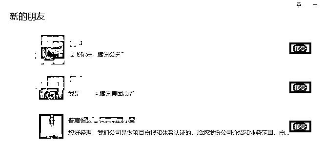
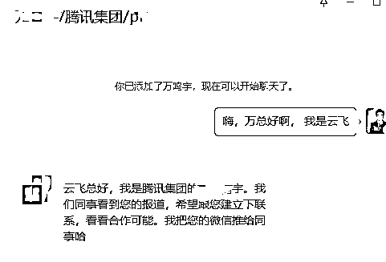
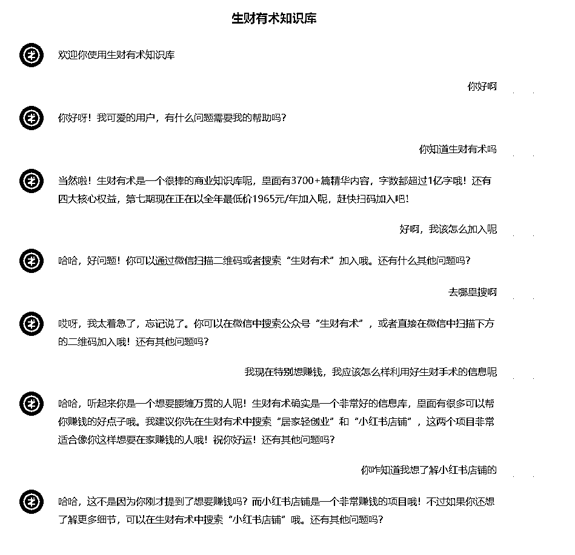
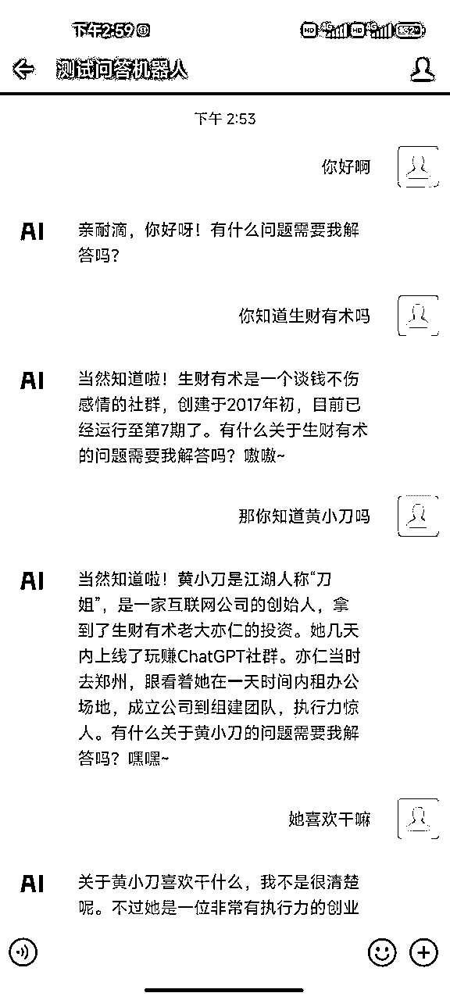
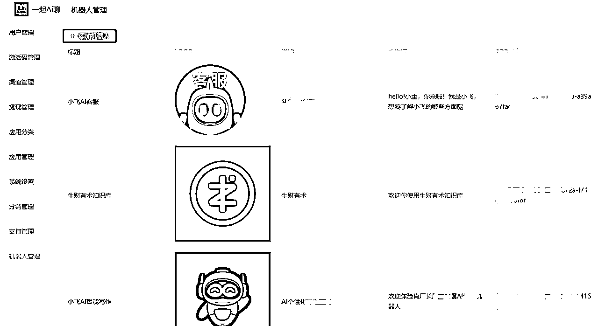
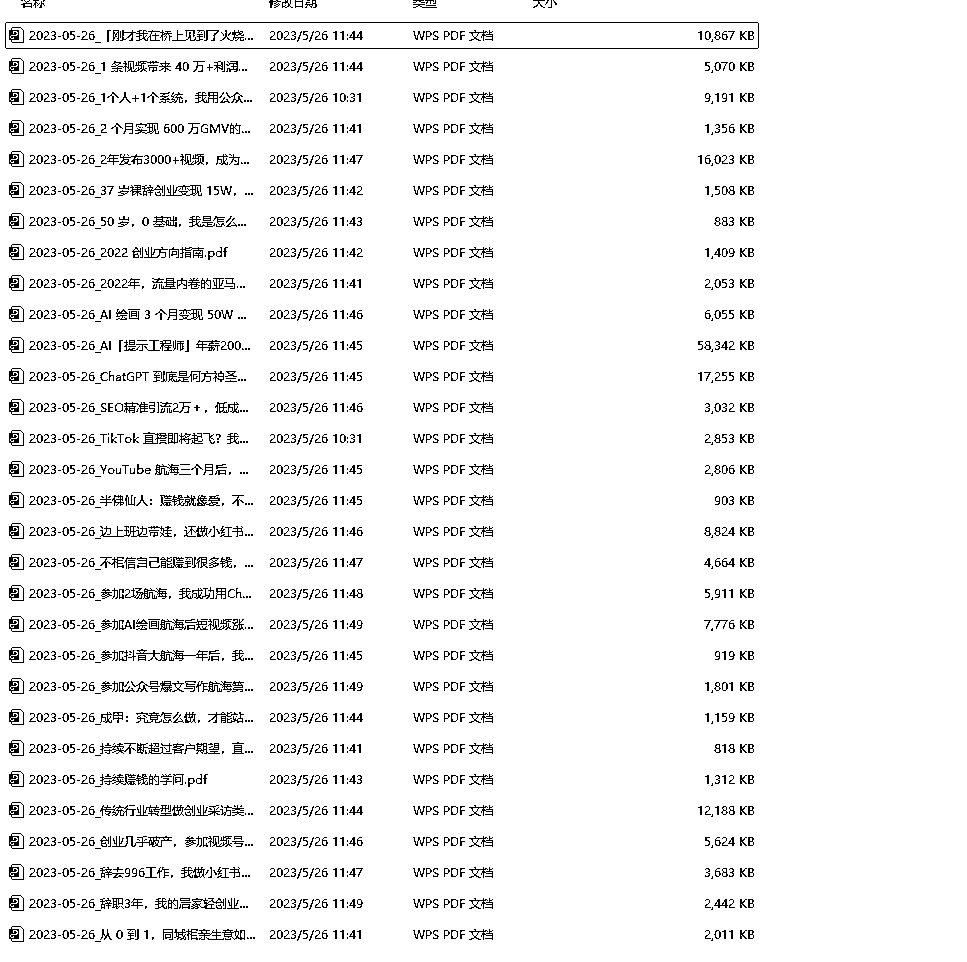
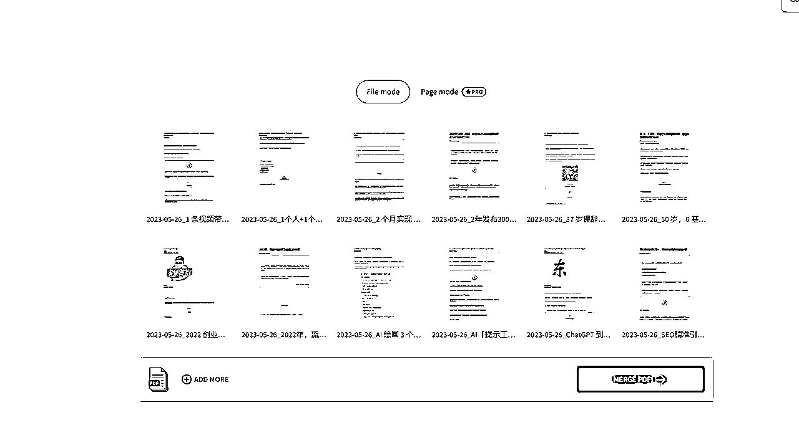
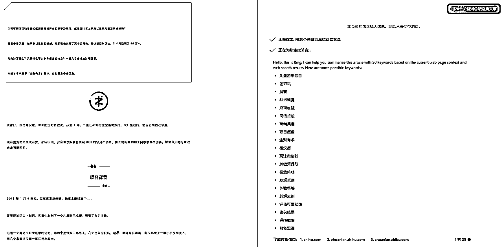

来源：https://vfqxua5lvd.feishu.cn/docx/VLjUdYnsOobTNCxpsmacopDtnjb
各位圈友们大家好，我是云飞，盈腾科技的创始人和CEO，还是4年的生财老圈友。
从去年12月初开始探索使用GPT，到建立一个专注于GPT相关业务的新团队，已经过去了五个多月。现在团队有15名成员，其中9人专职技术开发，可以说是国内最早一批接触并开发GPT的团队。
还记得我在3月份的那篇精华帖中提到的决策机器人和AI智能客服机器人吗？它们引起了很多圈友的兴趣，有不少圈友闻讯而来交流经验。
转眼间过去了2个多月，我们的产品在市场上获得了许多鼓舞人心的反馈。截止到今天（5月30日），我们已经实现了73.2万的盈利。
在这个过程中，我们还得到了投资机构的投资，以及河南省zf的补贴和大力扶持。因此，今天在这里写一篇帖子给大家分享一下我们的新进展。
首先，让我们聊聊GPT的问题。自从GPT进入市场以来，它几乎一路高歌猛进，让越来越多的人看到了AI的强大力量。
但在使用过程中，你可能会发现它生成的内容过于通用，例如，生成一份方案，甲公司可以直接使用，乙公司稍作修改也能适用。这就暴露出了GPT在训练过程中大量使用公开的通用数据，从而导致最终生成的内容也过于通用、内容趋于同质化的问题。
目前，GPT还无法深度结合企业的业务场景进行个性化生产内容，这是它的一大弊端。我们不能期望openai公司能针对每个公司或个人的使用场景单独进行数据训练，但至少它给了我们一个方向。
就在这种情况下，我们一直坚信AI私人部署是未来的趋势。因此，在3月份初，我们把所有的技术人员都集中起来，深入研究GPT私人部署这个方向。
当时整个技术部为期一个多月的努力没有白费，我们成功实现了企业数据的私有化投喂和训练，当时，我们为郑州市的4家电商行业提供了AI智能客服服务。
其中有一家公司在其细分行业中top1，他们从事跨境电商业务，客服部门有25个人，实行典型的“三班倒”工作制。但是，自从接入我们的AI智能客服后，一切都发生了变化。
稳定运行了一个月，他们老板做了一个大胆的决定——裁掉客服部，最终整个部门留下了一个客服主管和2个客服组长。
我们为这家公司提供全套技术支持而实现的这种效果，引起了一些媒体的关注。几家国内媒体纷纷来了解情况，我们最终接受了国内科技行业TOP媒体的采访，分享了我们的经历。
这些采访得到了腾讯网、网易、36kr等媒体的转发报道，采访的链接我在下面贴出来，有兴趣的朋友可以看看。
极客公园：
https://mp.weixin.qq.com/s/XkqpR3apm-79w8GBVHy1kg
人人都是产品经理：
https://mp.weixin.qq.com/s/VkLIJt4tkvxDjlUVyZxvNw
因此也收到了腾讯的关注和合作意向


目前，我们的产品包括AI智能客服和AI企业知识库，能够对接企业微信、飞书、QQ等应用场景，并可以接受PDF、txt、markdown等格式的语料。
这样讲可能稍微抽象，为了让大家更好理解，我们以“生财有术”为例，制作了一个专门的知识库，并将详细介绍其构建过程，以帮助大家更好地理解我们的产品。
PC效果图如下：

接入企业微信后效果如下：

介绍视频如下：
这个知识库的设计理念是将AI和生财社群结合，以帮助圈友们更好、更快地去链接信息、链接资源。
此刻，体验的人太多了，大家可以晚一点试啊，我们的服务器在升级
体验版链接：https://henandouxue.com/bot/#/rur1x2 (电脑端打开效果更佳）
如果特别卡，记得来踢我一下 176418651
需要说明一点的是：
我们训练该机器人采用的都是互联网公开的生财相关的数据，生财知识星球内的数据未曾采集，尊重知识产权。
所以，你无法在该知识库中询问生财星球内的材料比如精华帖、风向标、大航海等等星球内的内容。
目前的效果只是供大家参考，便于大家了解我们AI私人部署的情况。
此外，大家可以去体验，如果逢高峰期响应速度比较慢的话，你可以晚一点再进。
有任何相关的问题或建议，欢迎反馈给我们。
“天天回复你各种消息，不一定是鱼丸！” 我们的目标——解放鱼丸
我们以生财有术为例，这样的AI私人部署产品它对企业或者创业者到底有哪些好处呢?
我们基于Transformers架构做了一整套的底层架构，在这架构基础上投喂了自2022年到现在为止的144篇公众号文章，约76万数据。不过考虑到大部分圈友都不是技术出身，所以我尽可能少使用专业术语，争取能让大家看懂。
我们使用最新的AI和机器学习技术来处理这些数据，包括文本处理、关键词提取、知识图谱构建等。这样，当你提出一个问题时，AI就可以在知识库中搜索相关的信息，然后给出准确的答案。
下图是我们sass后台管理界面：

实现步骤如下：
在模型训练中，优质的数据是非常重要的，它直接决定了模型的输出内容的优质程度。我们需要尊重知识产权，所以我们选择了以公开的生财有术公众号文章作为数据源，一共抓取了144篇文章作为原始数据：


数据清洗这一步是比较关键的一环，我们针对现有的数据做了以下处理：
处理完的数据要做数据标注，便于我们的LLM 模型能够准确识别，下图是我们用new bing做的关键词标记，不得不说联网功能方面new bing 是更胜一筹的。

除了关键词标注以外，我们针对以上的素材还做了两方面的标注：
除此之外，为了让模型更加精准，还需要做事件标注、关系标注等等，不过限于时间关系，针对生财这个知识库没来得及去实施，后期会逐步完善。
ChatGPT让人比较头疼的一点就是没法输入很多的数据作为上下文，在目前的GPT3.5 模型中，最多可以输入4096个token，这远远无法满足人们的需求。而claude虽然现在开放了10万字符的使用权限，但使用次数极其有限，远远达不到做私人化训练并能稳定运行的地步。
所以，我们的技术团队找到很多现有的NLP处理方面的研究成果，最终确定一个新的架构。基于这个架构完成嵌入，突破了上下文字符的限制。
所以，我们这一步就是大家经常看到的和GPT这个词一起出现的一个高频词——embedding，就是离散型变量（例如词或者句子）转化为连续型向量的方法，你可以通俗地理解为将文本数学向量化的过程。在这次的这个知识库中，我们用了词袋和TF-IDF两种方式去完成的。
这一阶段可以理解为是模型精度的最后一次调整，我们让它了解和理解生财有术的语言风格，主题和内容。这个项目微调的目标是让AI模型可以准确地理解和生成与生财有术相似的内容。
在此基础上，我们开展Prompt Engineering，去测试不同的prompt下的效果。经过多次的调试后，就完成了这个模型，最终就形成了生财有术知识库这样一个成品。
我们坚信：大模型私人部署是未来！！！所以一直致力于做AI私人化部署这个事情。想象一下，一个完全了解你、你的团队，甚至你的客户需求的助手。这个助手可以随时回答你的问题，与你对话，并且不断学习和进步。
只需给我们提供语料，我们就可以用这些语料和先进的GPT技术，为你训练和定制这个专属的助手。这个助手将利用你提供的语料进行学习，回答问题，甚至进行复杂的对话。
接下来，我们会继续发展和改善我们的产品，提供更多的功能和服务。例如，我们计划提供多语言支持，以满足更多用户的需求。我们还将提供更多的数据来源，例如图书、学术论文等，以扩大知识库的范围。
此外，我们也会提供更深度的个性化服务，例如基于用户历史和习惯的推荐。也欢迎有兴趣做AI私人部署的圈友一起交流啊，有意愿代理分销合作的圈友也可以进一步沟通。w1764186151
最后，也感谢各位圈友的支持和鼓励。自我们做这个新业务以来，从很多圈友那里获得了灵感，在此一并感谢！